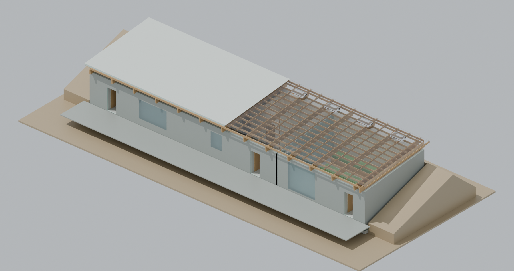
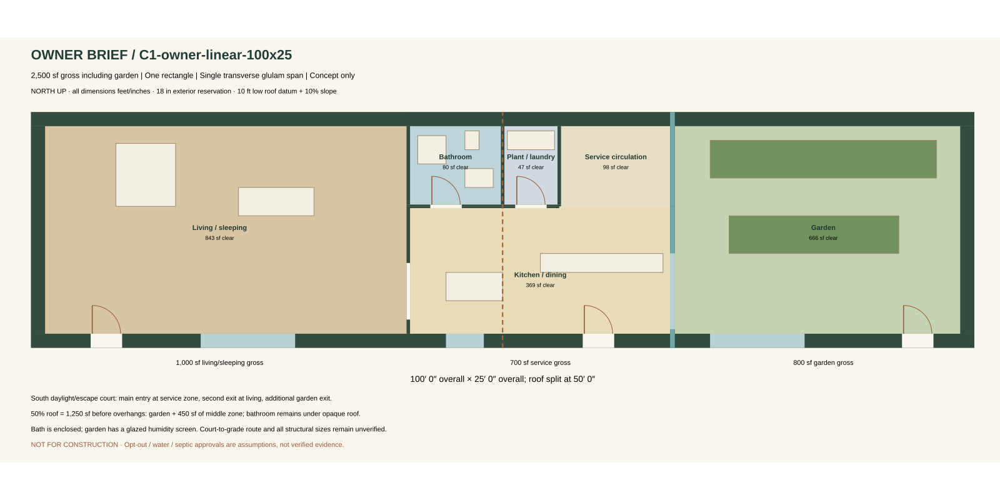
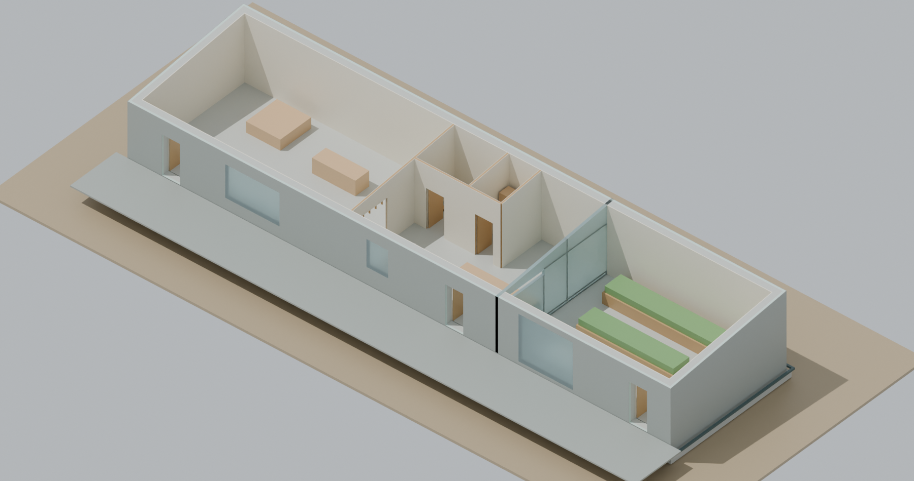
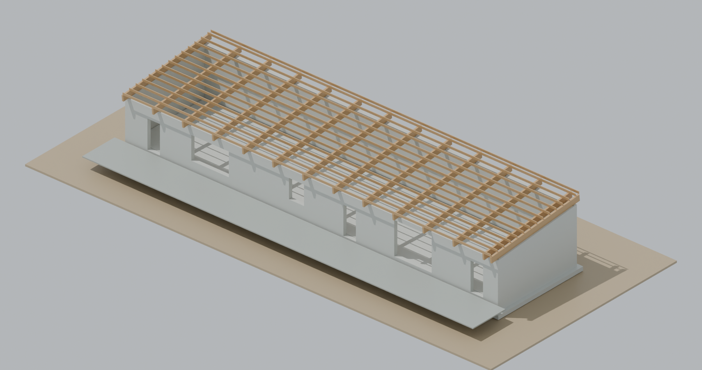

OWNER PDF REVISION · 2,500 SF GROSS · PROVISIONAL GEOMETRY
Three zones.
A living garden.
One roof span.
A combined living/sleeping zone, central kitchen/bath services, and garden in one earth-retained rectangle. Glulam and wood framing carry a half-opaque, half-polycarbonate roof.
Three-zone / area / roof split confirmed · dimensions need engineer optimization
This owner brief supersedes the earlier three-bedroom ranch. Concept only: all approvals and nine hold-point releases are unverified. The roof stays exposed; retained walls and a south daylight/escape court illustrate burial intent without claiming a surveyed site fit. Land/off-grid power acquisition remains excluded.
01 / CONFIRMED BRIEF, PROVISIONAL RECTANGLE
1,000 + 700 + 800 gross square feet.
The user confirmed the PDF's three zones, 2,500 sf gross including the garden, and 50% translucent roof. Garden occupies 800 sf gross; the remaining 450 sf of the 1,250 sf roof half extends over the middle zone. Bathroom is enclosed under opaque roof. A glazed screen separates garden humidity from the house.



C1 reduces the gross transverse span to 25 ft, about 22 ft clear between the 18 in exterior assembly reservations. Its length may be unsuitable for a particular parcel. The engineer must compare total roof and retaining costs and revise dimensions to available panel/glulam modules; no cost optimum is claimed.
02 / NATIVE BLENDER STUDY
Full-span glulam. Two roof systems.


Fourteen beam objects span the short dimension. The modeled 5⅛″ × 18″ section, bearings, 28 ft purchase lengths, purlin sizes and cantilevers are engineering reservations. US dressed timber and stock spacings come from the room-first US framing profile.
The entire garden-side roof half is clear, including its extension over the middle zone. Fixed shade slats have been removed; structural framing remains visible beneath the panels. Retractable solar control is an unmodeled budget allowance, shown fully open. Roof slope is provisionally 10% (1.2″/ft), replacing the old ¼″/ft shed. PC thickness is a supplier 16 mm (~⅝″) reservation. Long panel runs, gasket profiles, the opaque/PC step, thermal expansion, exterior shading and vents need a coordinated manufacturer/engineer detail. Vents are location reservations, not a completed airflow/penetration design.


Geometry checks and limits
787 original components; four saved scenes; 14 reveal stages; source/hash identity; closed positive-volume meshes; finite coordinates/unit scale; full-span beam section metrology. Plans check room coverage, fixture containment, conservative complete swings, connected 30″ walking envelopes and interior door pads. None of these checks is engineering, egress certification, site drainage or code approval.
Native readback · Plan checks03 / BUILD COSTS AND PROJECT TIME
Repriced for the owner brief.
Direct construction scenario $440,520–$1,008,308. Required architecture, engineering, soils, independent inspections and delegated PM are separate additional allowances, $80,100–$218,000. Freight, tax and an unapproved example contingency remain separate. No bids, actual payments, procurement promises or approvals have been invented.
PDF phases run through week 72 from overall project start, with closeout afterward. Construction roughly spans project weeks 22–72; actual dates and lead times are unknown. The earlier ranch's 21–37 week hired-crew estimate is superseded. All work is delegated; there is no owner DIY savings assumption.
04 / IMPORTANT RECONCILIATIONS
Do not turn assumptions into approvals.
Before any field release
- Obtain APN, exact zoning, survey, soils, water/septic and opt-out/permit/disclosure records.
- Commission coordinated stamped structural/roof/envelope/egress design and private inspection scope.
- Obtain insurer acceptance, three bids per trade, two PC/glulam quotes, written delivery dates and warranties.
Two corrections to the written sequence
- Full backfill requires engineered temporary restraint or the accepted permanent roof/diaphragm restraint system. HP6 alone is not a structural release.
- County guidance says Option 2 has no Certificate of Occupancy and retains an administrative final site visit. Other agency approvals and code duties still apply.
All nine PDF hold points are recorded as unverified. Weekly reports, contact logs and cash/bid trackers are prepared locally; no calls, emails, applications, payments, supplier orders or construction have been performed.
Owner brief reconciliation · Requirements matrix · Primary sources and controls05 / CURRENT FILES & HISTORY
Current owner revision.
Blender V2New native model, four scenes and timelineNative quantity takeoffMeasured vs reservation, US unitsUS purchasing / cost CSVSupplier references and allowancesTrade labor CSVPerson-hours, crew sizes, billed ratesHold-point registerAll nine gates await evidencePhase cash trackerNo actual / paid figures inventedDecisions and open evidenceRoof transparency and brief choices confirmedSuperseded ranch studyPrior plans/model/costs preserved in Git
Raw owner PDF is retained locally, not uploaded. Its SHA256 is recorded with the public requirements digest; personal identity and source contact scripts are omitted.